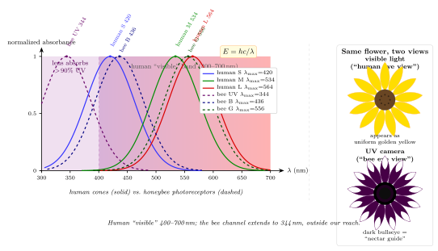

人眼看不见紫外, 蜜蜂却看得见 — 为什么?
上一节我们追到视觉的单光子极限 — 视杆能被 5-7 个光子触发, 每个视紫红质分子吸收一个光子就开启信号级联. 但那一节我们回避了一个问题: 视紫红质为什么偏偏在 500 nm 附近吸收? 视锥的三个亚型为什么刚好摊在 420/534/564 nm? 我们把 "400-700 nm" 叫作 "可见光", 这是个物理定义吗? 还是恰好人眼的色素就长成这样?
一朵黄色的 daisy, 你我看是均匀的一片黄. 蜜蜂飞过来看, 却看到花中央是一个深色的 "靶心". 同一朵花, 同一束太阳光, 为什么蜜蜂看到的比我多? 本节从视锥色素的吸收谱入手, 用一点量子尺度的估算回答这个问题, 并看看这个差别对生物世界意味着什么.
一、人眼的三种视锥与 "可见光" 的上下界
人类的彩色视觉是三色型 (trichromatic). 视网膜上三种视锥 (cone) 各带一种 opsin, 吸收峰分别为:
- S 视锥 (short, 蓝): 峰 $\lambda_S \approx 420\ \mathrm{nm}$, 对应 opsin OPN1SW
- M 视锥 (medium, 绿): 峰 $\lambda_M \approx 534\ \mathrm{nm}$, 对应 OPN1MW
- L 视锥 (long, 红): 峰 $\lambda_L \approx 564\ \mathrm{nm}$, 对应 OPN1LW
三种视锥的吸收曲线都是钟形, 半高宽约 100 nm, 彼此重叠 — 这种 "不干净" 的重叠才是色觉的基础: 大脑用三个通道的相对输出去反推入射光的光谱形状. 三条曲线合起来覆盖 380 到 700 nm 的范围, 这就是我们所谓 "可见光". 但这个范围的上下界并不是一个数, 而是两个不同机制卡出来的:
短波端 (紫外, $< 400$ nm) 不是视锥不能吸收 — 实际上 S 视蛋白的尾部一直延伸到 350 nm 左右 — 而是角膜和晶状体先把紫外吸掉了. 人眼晶体在 320-390 nm 吸收率达到 $90\%$ 以上, 在 300 nm 以下几乎全部吸光. 这是进化给视网膜做的保护 — 紫外光子能量高, 会损伤视网膜的蛋白和 DNA. 代价是: 我们看不见紫外.
这一点有个直接的证据. 白内障手术摘除晶体后, 或先天无晶体 (aphakia) 的病人, 会报告说自己能看到淡淡的 "紫白色" 光 — 那是到达视网膜的近紫外被 S 视锥吸收. 有历史学家猜测 Monet 晚年的白内障手术让他能看到更多紫外色, 这也许影响了他后期作品里压倒性的蓝紫调. 这是否为真无法完全坐实, 但生理上是可能的.
长波端 (红外, $> 700$ nm) 被一个更硬的物理事实卡住: 光子能量太低. 视紫红质的生色团是视黄醛 (retinal), 吸收光子时从 11-顺式构型异构化为全反式, 这个反应的激发能在 $\sim 2\ \mathrm{eV}$ 量级. 用
$$ E = \frac{hc}{\lambda} \tag{1} $$
代入: $\lambda = 700\ \mathrm{nm}$ 给 $E \approx 1.77\ \mathrm{eV}$, $\lambda = 800\ \mathrm{nm}$ 给 $E \approx 1.55\ \mathrm{eV}$. 能量再低, 就不够把视黄醛从基态抬到激发态了. 所以 $\sim 800$ nm 是视觉的物理下限, 不是进化可以轻易突破的 — 你得换一套完全不同的分子. 蛇的 "坑器" (pit organ) 就是另换一套: 它不是眼睛, 是一个探测 $\sim 10\ \mu\mathrm{m}$ 远红外 (热辐射) 的薄膜热传感器, 走的是温差机制而非光吸收.
短波端也有一个物理上限: 大约 $\lambda < 250\ \mathrm{nm}$ ($E > 5\ \mathrm{eV}$) 的紫外会直接把 DNA 碱基打得形成嘧啶二聚体. 任何视觉系统往短波走都得面对这个代价, 没有生物愿意用视网膜当 UV 剂量计.
所以, "可见光"夹在两个硬极限之间: 低端被视觉分子的激发能卡 ($\sim 800$ nm), 高端被 DNA 损伤卡 ($\sim 250$ nm). 中间这一段 (250-800 nm) 是所有"光学生命"可以合理利用的地盘. 人眼只在里面挑了 400-700 nm 这一块, 还主动把 400 以下过滤掉 — 这是一个生态策略, 不是物理必然.
二、蜜蜂的四色视觉与 344 nm 的紫外峰
蜜蜂也有三种感受器, 但峰值布局和人完全不同:
- UV 感受器: 峰 $\lambda_{UV} \approx 344\ \mathrm{nm}$
- 蓝 (B): 峰 $\lambda_B \approx 436\ \mathrm{nm}$
- 绿 (G): 峰 $\lambda_G \approx 556\ \mathrm{nm}$
三个峰往短波平移了一整段: 蜜蜂的 "绿峰" 大致等于人的 "黄峰", 它的"蓝峰" 位于人眼 S 锥和晶体吸收开始的交界处, 而最有意思的是 UV 峰 — $344\ \mathrm{nm}$ 完全在人眼晶体的吸收截断线以里, 对我们是真·看不见的.
还有一点重要: 蜜蜂的红色灵敏度在 600 nm 以下就衰减, 它基本看不见红色. 这和 "红花吸引蜜蜂" 的民间直觉相反 — 红花主要靠鸟 (如蜂鸟) 传粉, 而蜜蜂授粉的花多数在黄蓝白紫色调, 花瓣上同时带 UV 图案.
蜜蜂的眼是复眼, 每只约 $6000$ 个小眼 (ommatidium), 每个小眼自成一个小光学单元, 角分辨率 $\sim 1^\circ$ — 比人眼的 $\sim 1'$ 差 60 倍. 但它的时间分辨率高得惊人: 闪烁融合频率约 $200\ \mathrm{Hz}$, 人只有 $\sim 60\ \mathrm{Hz}$. 这就是为什么蜜蜂能在飞行中扫视花朵还分得清细节 — 角分辨率差, 时间分辨率补.
除了四色视觉, 蜜蜂的复眼还能探测偏振方向. 天顶以外的蓝天在瑞利散射下带有偏振图案, 蜜蜂可以在阴天只要看到一小块天就推知太阳方位, 用它来导航. 这让它的视觉系统比 "三色 + 空间图" 的人眼多了两个维度: UV 通道 和 偏振通道.
两种视觉系统, 覆盖的电磁谱区段差不多 (300-700 vs 400-700 nm), 但采样方式不一样. 同一朵花在两个物种眼里是两幅完全不同的图像. 这正是我们要看的下一节.

三、"蜜导" — 花朵给蜜蜂留的着陆跑道
同一朵 black-eyed Susan (Rudbeckia hirta) — 我们看到整朵是饱和的金黄, 花心只是深褐色一个点. 如果你用装了 UV 滤镜的相机拍它, 中心会出现一个明确的深色靶环, 像一个甜甜圈套在花心外, 外层花瓣则在 UV 下显亮. 这个差别是因为花瓣不同部位含有吸收 UV 的类黄酮 (flavonoids), 中心区域含量高, 外沿少. 对人眼: 这些化合物在可见光下颜色相似, 差别被 "黄色" 压平. 对蜜蜂: UV 通道被强烈激发, 靶心和外缘对比鲜明.
这种图案在植物学里叫 蜜导 (nectar guide). 它的功能就是给传粉者标出花蜜在哪里 — 字面上就是一条"着陆引导"带. 统计显示, 约有三分之一的虫媒花带有 UV 蜜导. 从花的视角, 这是给蜜蜂看的符号, 完全不需要照顾我们的审美; 从蜜蜂的视角, 这些靶环是它识别食物源、区分物种、判断新鲜度 (花龄)的一套信号.
这里要停下来重新问: "花的颜色" 这个概念到底属于花还是属于观察者? 花不会选色 — 它的色素就那样摆着, 吸收特定波长的反射谱由色素结构决定. 颜色 (color) 是光谱反射率与观察者视觉通道的卷积. 一朵花对蜜蜂有 4 维 "颜色" (UV/B/G + 偏振), 对我们只有 3 维 (S/M/L). 人眼里均匀的金黄, 在蜜蜂复眼里是"边缘亮 + 中心深 UV"的双环结构. 我们以为花是 "给我们看" 的, 但实际上它的信息层面大多不是给我们看的.
这一点把"光是什么"这个问题挤到了一个有趣的位置. 光不是绝对的, 它的存在方式是 "能激发某种色素的那一段". 每种动物的视觉定义了自己的"光谱世界". 蜜蜂的世界, 鸟的世界, 皮皮虾 (有 12-16 种视锥!) 的世界, 人的世界 — 都是在同一束太阳辐射下切出不同的截片.
四、视蛋白的分子调谐 — 为什么峰会在 344 还是 420?
视蛋白 (opsin) 属于 G 蛋白偶联受体 (GPCR) 家族, 它的关键配体是视黄醛 (retinal). 裸露的视黄醛本身只吸收在 ~380 nm — 但把它塞进 opsin 的结合口袋里, 周围若干关键氨基酸通过静电、氢键与溶剂效应调节视黄醛的共轭 $\pi$ 电子系统, 把吸收峰往短或长波端推. 这就是为什么同一个视黄醛分子, 装在不同的 opsin 里, 吸收峰可以从 $\sim 350$ 漂到 $\sim 570$ nm.
最关键的几个氨基酸 — 比如人 L/M 视锥 opsin 第 180、277、285 位的三个位点 — 每换一个, 峰位就移动几 nm 到几十 nm. 这些位点被叫作 "调谐位点" (spectral tuning sites). 以蜜蜂的 UV opsin 为例, 在结合口袋里一个质子化席夫碱缺少反离子稳定, 导致吸收峰回退到裸视黄醛附近 ($\sim 344\ \mathrm{nm}$); 而人 S opsin 吸收峰在 420 nm, 是中等程度的红移.
从分子到吸收峰的对应关系, 让我们能估一下能量量纲. 以蜜蜂 UV 峰为例, 用公式 (1):
$$ E_{UV} = \frac{hc}{\lambda_{UV}} = \frac{1240\ \mathrm{eV \cdot nm}}{344\ \mathrm{nm}} \approx 3.60\ \mathrm{eV} \tag{2} $$
对比人 M 视锥峰:
$$ E_M = \frac{1240}{534} \approx 2.32\ \mathrm{eV} $$
差了 $1.28\ \mathrm{eV}$. 这一个数字正是调谐位点集体贡献的 "分子级电压"— 大致相当于一个共价单键的能量量级的三分之一. 进化通过几个氨基酸替换就能跨过这个能量差, 说明视蛋白家族的色谱调谐是一个非常灵活的工具, 这也是为什么不同动物的视觉谱会差那么大.
哺乳动物大部分只剩下两种 opsin (蓝锥 + 绿锥, 二色视觉), 原因是在恐龙时代的夜行祖先阶段, 三种非视杆 opsin 有两种丢失了 (S 保留一条, 一条 UV opsin 遗失, 另一条演化为现在的 M/L 前体), 之后灵长类在 $\sim 3000$ 万年前通过基因复制重新分出 M 和 L, 回到三色. 蜜蜂和昆虫则从未丢失祖先的 UV opsin — 节肢动物这一支没经历过"夜行哺乳动物"的瓶颈, 所以保留了完整的 UV 通道.
至此我们可以做一个量级对比. 人眼晶体在 350 nm 处吸收接近 $100\%$; 即使人的 S opsin 分子本身可能还能在那里吸收一点光子, 也没有光子能到达视网膜. 蜜蜂的复眼没有大型晶状体 — 每个小眼用简单的锥形晶锥 (crystalline cone), 材料选择更 UV-透明. 所以 "蜜蜂看见 UV" 是两个独立选择叠加的结果: (1) 保留了 UV opsin, (2) 光学结构不吸 UV. 缺一不可. 哺乳动物晚期即使重新进化出 UV opsin, 也过不了晶体这一关, 除非它把晶体也换掉 — 这代价太大了, 所以哺乳类全体都不看紫外. 只有像驯鹿这样偶尔让晶体在极北冬季略透一点近 UV 的例外.
五、历史一瞥与"可见光"的去中心化
蜜蜂能看色彩这件事一度被科学界否定. 20 世纪初主流观点认为昆虫只能区分明暗, 认为 "花的颜色" 对它们毫无意义. 奥地利动物学家 Karl von Frisch 不服气. 1914 年他在慕尼黑做了一个著名实验: 他训练蜜蜂在一个蓝色卡片上找糖水, 然后把蓝卡片和一排不同明暗的灰卡片放在一起. 如果蜜蜂只能感知亮度, 它会平均地去所有卡片; 但如果它能感知颜色, 它会集中去蓝色那张. 结果蜜蜂毫不犹豫地只去蓝色卡片. 这是动物色觉研究史上最简洁的一个控制实验.
von Frisch 后来又做了更多实验, 包括著名的蜜蜂"8 字舞"与方位通讯研究. 他因此在 1973 年获得诺贝尔生理医学奖 (与 Lorenz, Tinbergen 共享), 那是诺奖第一次颁给动物行为学. 他对蜜蜂视觉的工作本身是实验心理物理的典范, 也为后来更精细的电生理实验铺了路 — 1960 年代 Autrum 等人直接测到了蜜蜂复眼的三种光谱电反应, 精确得出 344/436/556 nm 的三个峰.
把整条线看下来, "可见光" 这个词的权威感被大大削弱了. 在物理上, 电磁波谱是连续的, 从无线电到伽马射线没有任何"自然分界". 我们给 400-700 nm 贴上 "可见"的标签, 只是因为人类恰好这里有视锥. 蜜蜂有它自己的 "bee-visible"; 鸟类大多也有 UV 视觉, 甚至能区分雄鸟胸前的 UV 反射纹样, 这些纹样人类看就是普通羽毛; 蝮蛇有红外 "视觉" (严格来说是热觉). 每种动物定义了自己的光谱切片.
"光是什么"的答案于是多了一层: 光是电磁波, 但 "光作为可被看见之物" 是 "电磁波谱中被某种色素和透明光学系统共同选中的一段". 这个选择过程在生物学上由两个因素决定 — 视蛋白的调谐位点, 和屈光介质 (角膜、晶体、晶锥) 的透明窗. 两者协同, 形成每个物种独有的可见谱. 你能看到一朵花, 蜜蜂也看到一朵花, 但你们看到的是物理上同一个对象在两套 "生物滤镜" 下的两张照片.
小结
这一节我们从三种人视锥的吸收峰出发, 对比了蜜蜂的四色视觉 (含 UV 344 nm), 并用 $E=hc/\lambda$ 量化了两种视觉系统相差约 1.28 eV 的色素调谐. 视觉的边界被三重机制共同定义: 视蛋白的激发能决定低频端 ($\sim 1.5$ eV, $\sim 800$ nm), DNA 损伤决定高频端 ($\sim 5$ eV, $\sim 250$ nm), 中间再被各物种的晶体吸收和 opsin 数量裁剪. 在"光是什么"这个大问题上, 本节把答案从"客观电磁波谱"推向"电磁波谱中被生物光学系统选中的一段": 可见光不是物理事实, 而是一个生理+生态的契约. 花朵的"蜜导"提醒我们, 光谱里的许多信息对我们来说是静默的, 却对别的眼睛响亮如号角. 下一节我们将反转问题: 生物不仅接收光, 也发光 — 萤火虫、深海鱼、藻类的生物发光, 来自哪一种量子跃迁?
▲